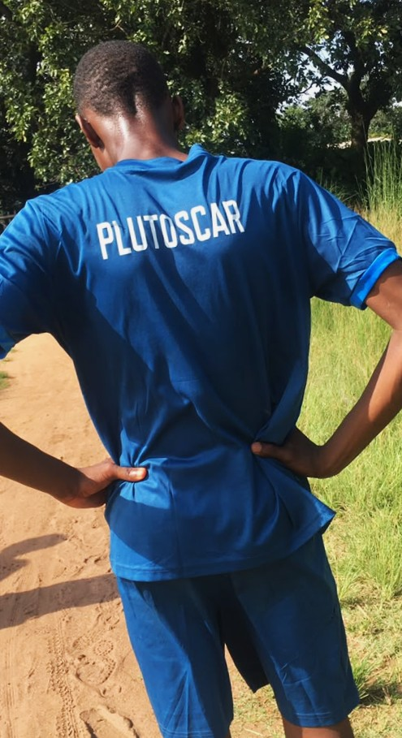

Creative tools
CorelDRAW and Canva for flyers, logos, invitations, certificates and other visual communication materials.
THE PERSON BEHIND THE BRAND
PLUTOSCAR is a personal identity built around creativity, practical technology and the belief that skills grow through consistent work.

A LITTLE ABOUT ME
I am a graphic designer, STEM and computer programming instructor, and aspiring software developer.
My work brings together visual design, computer education and practical coding activities. I use CorelDRAW and Canva to create visual materials, and educational tools such as PictoBlox to introduce learners to programming and technology concepts.
I am also developing my web-development skills. I am learning how HTML, CSS and JavaScript work together to create useful, responsive websites. PLUTOSCAR is where I document that progress and present work I can genuinely demonstrate.
I value practical learning. I want people I teach to understand what they are doing, practise it themselves and become more independent with the skills they acquire.
Make visual and digital work that communicates clearly and serves a real need.
Understand a concept, build something with it, test it and explain the result.
Review mistakes honestly, make corrections and keep developing.
TOOLS & DEVELOPMENT
A clear view of the tools and skills behind the work.
CorelDRAW and Canva for flyers, logos, invitations, certificates and other visual communication materials.
PictoBlox, Junior Blocks and beginner Python activities to make coding concepts practical and visible.
Currently progressing through HTML and CSS, including Flexbox, nested layouts and responsive page structures, before building more with JavaScript.
TRAINING
My STEMpedia certificates cover Introduction to Programming, Artificial Intelligence for Kids and Machine Learning using Block Coding with PictoBlox.
View my certificates →